Rock Climbing in CT Hash
Run #1002, June 13, 2005
Hare: Dry Foot Fairy
Location: Old Furnace State Park, S. Killingly, CT.
Weather: 80’s, humid and hazy.
Present: Dr WHO, Oozing SD, SESYB, Just Michelle, Basket Boom Boom, WIPOS, Fuwangi Boner, Tinker, Bondo Jovi, Seamus, Ben. Visitors: Sparky the Hobosexual (NH3).
The Run:
Frustrated by his inability to attract the cowardly members of the RIH3 to one of his rock climbing ventures, Dry Foot Fairy, the hare, decided to approach this from another angle. He set a hash from a well-known Connecticut cliff-climbing venue and homosexual meeting place. This was sure to attract a crowd. The first arrival, Dr WHO was greeted by the hare and several alternately nubile and scruffy teenaged delinquents. The teens were being surreptitiously fed beer by the hare. They were apparently rock climbers. Right! The two hashers were soon joined by Sparky from Newport, and then Oozing with not only SESYB but also Just Michelle. Another blatant attempt by Oozing to bribe the hash! They prelubed with beer, bug repellant and ivy block. But they delayed too long. Basket, WIPOS and, worst of all, Fuwangi arrived. But at least no Bondo, thank God. Count your blessings while you can!
Just after 6:30 they headed on out, northeast on the access road. Oozing chose to avoid the pavement and found a path in the woods just south of the road. They soon came upon true trail. The rest soon turned in at a check, but the head start allowed Oozing to follow a prolonged falsie east, calling the rest behind him. He tried to sneak around back behind them in the bushes. Ha Ha! They turned back as a group, and found true trail southwest towards Ross pond.
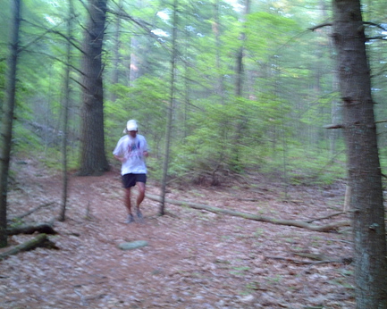
Oozing in the lead, so fast he’s a
blur!
It was as a group then, that they paralleled the pond south. It was overly marked. There was no shiggy. Basket was now leading. Boring! The trail led finally to an embankment at Rt 695. Basket climbed down and tried luring the pack into a chest-high flow in a tunnel under the highway. As always, he was ignored. They crossed over west and turned northwest up along the far side of the pond. Circumnavigating a pond! Too bad Bondo wasn’t there. Or wasn’t he?
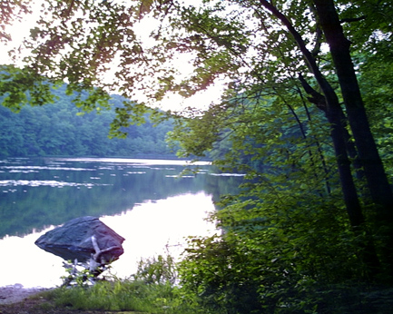
“Let’s Run around this!”
Fuwangi by now had taken advantage of his superior speed and inferior intellect. He was thus way out in front. [This allows him to magnify his many errors, so it is not discouraged.] He came to a check. A falsie was straight and he returned to find true trail reversing and returning southwest. The pack was close enough to hear him, so most followed. WHO and Oozing reasoned that an “X” would only be placed if the hare didn’t want one to go that way. And the trail was blazed in blue. Just like the North-South trail! They decided to defy the hare and they continued north along the shoreline. This is just what Bondo would have done!
Basket by now was chasing Fuwangi. He made some bad decisions as well, and ended up leading Seamus (but no one else) into a nice little swamp, providing the only shiggy of the run. But eventually they all caught on and, more or less together they found true trail turning west then uphill. They turned north on a ridge. WHO, meanwhile, had finally come to a check well ahead of the pack. He decided to continue on the blue-blazed trail rather than the smaller trails close to the water. A check sent him uphill on unmarked paths, following an awful, but strangely familiar scent. Oozing recognized the danger of following Dr WHO. He paralleled the base of the hill briefly, on true trail.
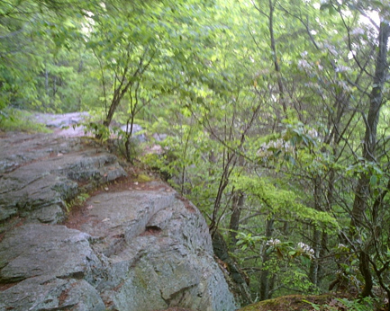
The first ledge.
Emerging out of the trees, WHO was proved right for once. He had found marks. But he paid for his good luck by coming across Ben! Bondo was near! WHO vowed never to shortcut again. As he came to the first ledges, he met Bondo and Tinker, beer mugs in hand. Not wishing to exert themselves or to spill any beer, they had decided to try the obvious and search for the beer check on the cliffs. The motley trio, as fine and accurate a representation of RI hashing as one could ever want, proceeded together on trail. This led north along the ledge-tops. They came to the main overlook and found a rock climber and girlfriend drinking Coronas (some Mexican drink, possibly a form of weak tea or filtered urine or something). The climbers could not give any clues. But there was plenty of time. Bondo finally found the black garbage bag. They decided to relocate.
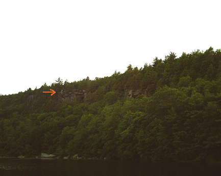
Climbers suggesting that Bondo move
along to another ledge.
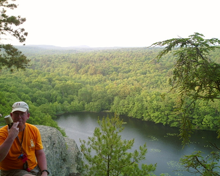
The second ledge. WHO liked the
view.
Enjoying beer within earshot of the first cliff, they had found a second outlook, equally scenic. All too soon, the others arrived at the “B”. Visible through the bushes, their efforts at finding beer were comical. But all too soon, Ben tore himself away from his master and yet again exposed Bondo’s hiding place. The Woonsocket police can rest easy. The group rejoined. But Tinker and WHO had hidden the remaining jugs of beer in the bushes. Another great and original joke! Ha Ha!
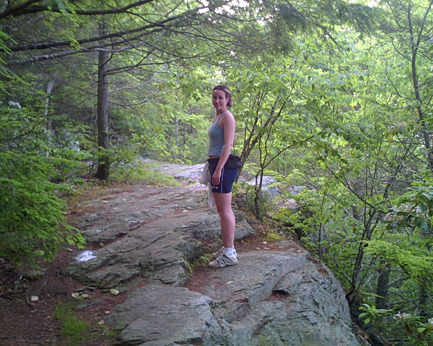
“Isn’t there supposed to be beer
somewhere?”
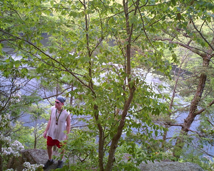
“Sh*t! Where’s the f**kin’
beer?”
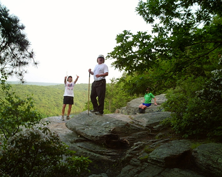
“You guys look for it! I’m too
busy!”
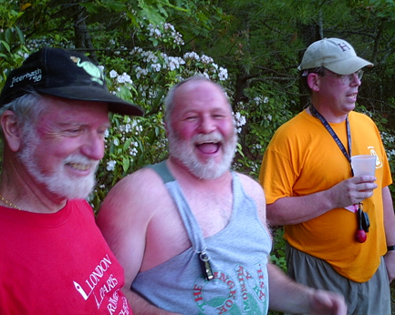
“Gotcha,
asso’s!”
So the beer found, they enjoyed a rest with a view. Sparky commented: “You guys don’t sing like we do in Newport.” The result was predictable.
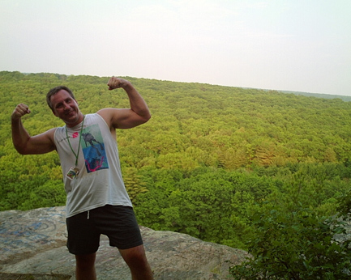
“Just take four steps backward. It’ll
be a better angle.”
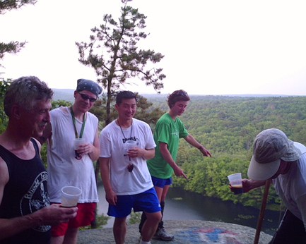
“How about you, WIPOS? Want your
picture taken?”
The rhubarb refused to rise, the engineer’s wife was satisfied, the pilot was fit, etc. etc. etc. The climbers on the neighboring ledge were soon driven away. Bondo pissed. Just Michelle continued to photograph the event.
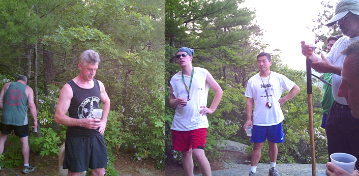
Wide Angle View of Bondo in
action, contributing to cliff erosion.
Finally the beer was gone. On out trail was led by WHO, Fuwangi and Basket. They continued north and soon descended to a check. Going straight they came to a “Check Back 11”, after crossing a small stream bed. Looking at their fingers, they realized that none of them could reliably count above ten. Basket, still holding a beer, couldn’t guarantee anything above 5. They had no choice but to continue. They reasoned that the hare would go around the upper pond as well. Wrong! But their shouts of “On On!” as well as some meaty profanities at least drew Oozing to follow. The rest stuck with the hare. They doubled back on the west side of the pond and went directly to the parking lot. Over on the east side of the pond, fortune was favoring the mentally handicapped. A trail led to the lot as well. Fuwangi and Basket led WHO. Oozing found his own unique way back. Some time later.
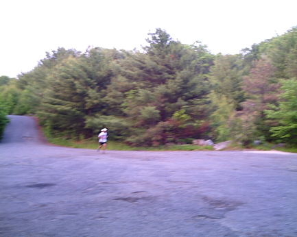
Oozing. DFL, but still a
blur!
The circle was joined in Ross pond. This proved less enticing than it first seemed. The water temperature was uncomfortably hot and standing or moving about released clouds of foul-smelling gas. Leeches were present. But at least SESYB found a new temporary Hashit, to replace the one lost in Squannakonk Swamp.
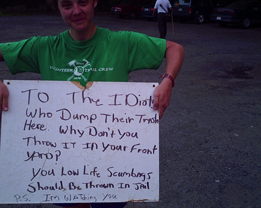
A new Hashit, made to
order?
Ratings for the run: virgin territory, bimbos, a fine outlook, mosquitoes and leeches vs. no bushwhacking, no thorns, no poison ivy, Bondo at the beer check, and no losses. Total: 6.9!
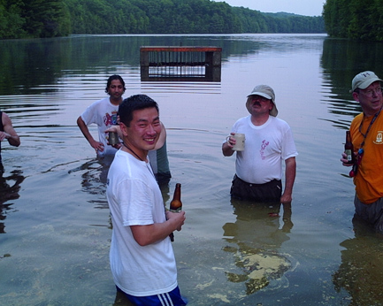
The hare being punished. Note the
water clarity.
Hashit was given from Oozing to: Oozing. But Tinker, hiding in the long grasses near the shore, had taken off his shoes to keep them dry! Pathetic. He was given his just rewards, and turned the new Hashit into a useful object.
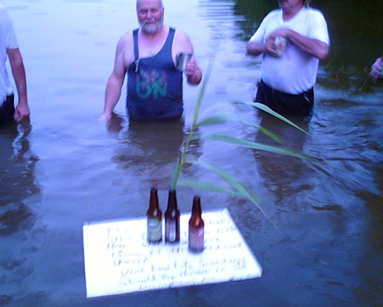
A new use for the Hashit.
Next, attempts were made at naming Just Michelle. Her photographic efforts were cited. The best of these efforts was “Flasher” [No one could do justice to the location of her camera, nestled in her cleavage. All were too busy racking (ha, ha!) their brains to think of a way to get the camera to activate itself.] “Pond Her (on it)” was the ultimate choice and deserves to die in obscurity before anyone is tempted to use it. They gave up when Dr WHO started “Singin’ in the Rain.” Sparky wished he had never said a word about singing.
After swinging low, and drying off, they drove to the On On On, at the remodelling Bishop Hill Tavern. The Red Sox were winning, the food was forthcoming, the songs were plentiful and the waitress was unhappy. Just Michelle received her first “Alouette”. We must be trying to lose this one. Don’t listen to us, Just Michelle! We want you back! We don’t mean any harm! Show us your …! Oops!
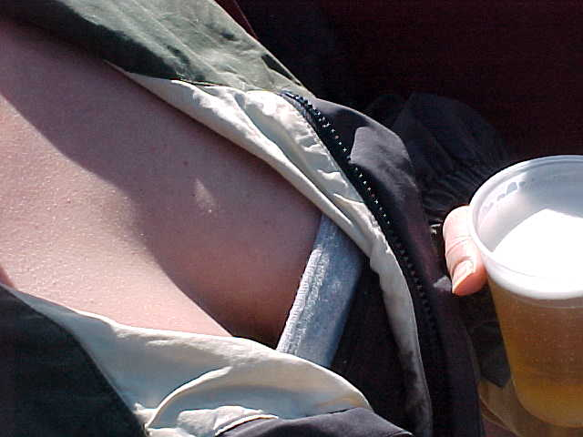
What the camera saw!
On On